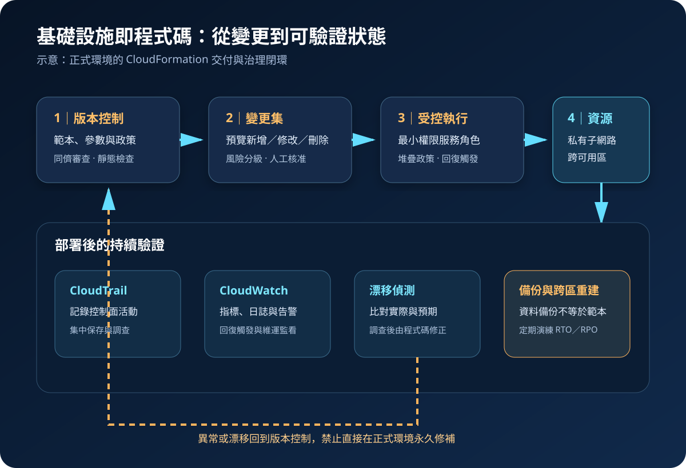

AWS CloudFormation：基礎設施即程式碼與受控變更
AWS CloudFormation 以宣告式範本建立與更新 AWS 資源，讓基礎設施能版本化、審查與重複部署。它負責協調資源狀態，但不會自動證明架構安全、資料可復原或每次變更都符合業務需求。
作者：Dr. William｜查閱與發布：2026-09-16
服務定位
AWS CloudFormation 是 AWS 的基礎設施即程式碼服務。團隊以 JSON 或 YAML 範本描述資源及相依關係，再由 CloudFormation 建立堆疊、計算變更順序並回報狀態。相同範本可配合不同參數部署到多個環境，降低人工點選造成的差異。
CloudFormation 是資源協調與狀態管理工具，不是應用程式部署品質、執行階段防護或資料備份的替代品。範本能重建資源設定，不能自動還原資料內容；成功完成堆疊也不代表工作負載已通過安全、效能與復原驗證。
核心概念與適用邊界
主要元件
- 範本：描述 Resources，並可搭配 Parameters、Mappings、Conditions、Outputs 與 Rules；敏感值不得直接寫入或輸出。
- 堆疊：一組由 CloudFormation 共同管理的資源；建立、更新與刪除會依相依關係協調。
- 變更集：在執行前預覽資源新增、修改、替換或刪除，供風險評估與核准。
- 堆疊政策與服務角色：前者限制重要資源的更新動作，後者決定 CloudFormation 代表使用者可執行的權限。
- 漂移偵測：比較支援資源的實際設定與範本預期，找出未經程式碼流程的變更。
- StackSets：以單一操作跨帳號與區域部署堆疊執行個體，適合組織級基線。
邊界與依賴
- 並非所有資源屬性都支援匯入或漂移偵測，結果必須依資源類型能力解讀。
- 變更集能顯示預期資源異動，但無法預測所有執行階段影響、資料移轉風險與應用相容性。
- 回復可嘗試恢復堆疊資源狀態，不能保證資料庫、檔案或外部系統資料回到一致時間點。
- 跨帳號與跨區部署會擴大權限與故障半徑，StackSets 必須限制目標、並行率與失敗容忍度。
- CloudFormation 管理控制面；作業系統、應用程式、資料、密鑰使用與網路流量仍需獨立治理。
適合與不適合的使用情境
適合
- 需要讓開發、測試與正式環境採用相同結構，並將每次基礎設施變更納入版本控制與審查。
- 需要重複建立 VPC、IAM 角色、負載平衡、運算、資料庫、監控與備份等相依資源。
- 需要跨帳號或跨區域部署組織基線，例如稽核角色、記錄目的地、Config 規則與安全告警。
- 需要透過變更集、堆疊事件與漂移偵測保留可追溯的變更證據。
不適合或不能單獨完成
- 只需執行短暫的一次性操作，且該操作沒有可重建、維護或稽核價值。
- 需要管理應用程式內部狀態、資料內容或完整 CI/CD 流程時，仍需搭配部署、資料移轉與測試工具。
- 未建立程式碼審查、環境隔離、權限邊界與回復演練時，不應直接以高權限自動化修改正式環境。
- 資源供應商或必要屬性尚未受支援時，需評估自訂資源的生命週期、逾時、重試與額外攻擊面。
示意故事案例：雙可用區預約平台的受控交付
以下為示意案例，不代表特定組織或正式部署。 一個預約平台把網路、負載平衡、運算、資料庫告警與備份政策拆成可審查的 CloudFormation 堆疊。範本存於版本控制系統，合併前執行語法、政策與安全檢查；測試環境先建立變更集並完成整合測試，正式環境再由不同核准者確認是否包含資源替換或刪除。
正式部署使用受限服務角色，在私有子網路建立跨可用區資源，資料儲存採 KMS 加密，應用機密透過 Secrets Manager 動態參照取得。CloudWatch 告警可觸發回復，CloudTrail 保存控制面活動。每日漂移檢查若發現人工修改安全群組，團隊先調查必要性，再修正範本並重新走變更集流程，而不是把主控台修改永久留在正式環境。

建置與運作流程
- 定義資源邊界：依生命週期、擁有者與故障半徑拆分堆疊，避免單一巨大堆疊使變更與回復互相牽連。
- 建立安全範本：設定私有網路、阻擋公開存取、傳輸與靜態加密、備份、標籤、記錄及告警；不嵌入任何有效敏感驗證資料。
- 納入版本控制：對範本、政策、參數結構與測試設定進行同儕審查，保護主要分支並保留核准紀錄。
- 執行前置檢查：驗證語法、資源規格、組織政策與安全基線，在隔離帳號部署測試並驗證刪除及替換行為。
- 建立變更集：確認新增、修改、替換、刪除與 IAM 能力；高風險變更由獨立人員核准並安排維護時段。
- 以受限角色部署：服務角色只允許必要資源與動作，人員透過聯合登入、MFA 與短期角色啟動流程。
- 監看與失敗處理：追蹤堆疊事件、CloudWatch 告警及回復觸發；失敗時保留證據，確認資料狀態後再重試。
- 偵測與修正漂移：定期檢查支援資源，將必要的緊急修改帶回範本；非必要偏差經核准後由程式碼修正。
- 演練跨區重建：在備援區域驗證範本、映像、資料備份、KMS 金鑰、DNS 與外部相依，量測實際 RTO 與 RPO。
成本、可用性與維運考量
對 AWS 原生資源使用 CloudFormation 通常不另收服務費，實際建立的 EC2、RDS、S3、CloudWatch、CloudTrail、KMS、AWS Backup 與資料傳輸仍按各服務計價；第三方資源供應商可能另行收費。測試堆疊、重複環境、跨區備援、記錄保存及未刪除資源都會增加成本，應以標籤、預算與自動清理機制追蹤。
CloudFormation 堆疊按帳號與區域運作。單區範本不會自動形成跨區可用性；高可用工作負載仍需在區域內採多可用區設計。跨區復原則要在目標區域準備可部署範本與區域化參數，並確認映像、配額、服務可用性、KMS 金鑰、憑證、DNS、備份複本與外部相依。
回復可能受資源刪除政策、外部修改、不可逆資料操作或配額限制影響。重要資料資源應設定適當 DeletionPolicy 與 UpdateReplacePolicy，先取得可還原備份，再以失敗注入及復原演練確認流程，不把「堆疊回復完成」視為業務已恢復。
CloudFormation 特有資安風險與控制
- 服務角色權限過寬：CloudFormation 可代表操作者建立多種資源；依堆疊類型建立最小權限角色，限制可傳遞角色，並以權限邊界與 SCP 控制上限。
- 範本形成隱性公開面：安全群組、儲存政策、負載平衡或 API 設定可能意外公開；在合併與部署前以政策即程式碼阻擋高風險組態。
- 敏感資料進入範本或事件：機密使用 Secrets Manager 或 Parameter Store SecureString 的動態參照，限制讀取權限；不得放入範本、參數預設值、Outputs、標籤或日誌。
- 變更集誤判：資源替換可能造成中斷或資料遺失；核對 Replacement、刪除政策、相依資源與資料移轉計畫，高風險項目要求雙人核准。
- 自訂資源供應鏈：自訂 Lambda 或第三方型別可能取得廣泛權限並執行任意邏輯；固定版本、驗證來源、限制網路與 IAM，並監看逾時及回傳資料。
- StackSets 擴大故障半徑：錯誤範本可同時影響多帳號多區域；先以沙箱與少量組織單位試行，限制並行率、設定失敗容忍度並保留停止條件。
- 漂移成為長期盲點：緊急人工修改若未回寫範本，後續更新可能覆蓋或保留不安全狀態；定期偵測、明確核准例外並追蹤到期日。
- 控制面證據不足：集中保存 CloudTrail，使用 CloudWatch 與 EventBridge 監看堆疊失敗、異常刪除及高風險變更，並限制日誌刪除權限。
- 復原依賴缺口：範本不是資料備份；以 AWS Backup 或服務原生機制定期備份、跨區複寫與實際還原，並驗證備援區域的金鑰與權限。
共同責任邊界
AWS 負責 CloudFormation 受管服務與底層雲端基礎設施的安全，並提供範本處理、堆疊協調、事件、變更集、漂移偵測與 API。客戶負責範本內容、資源架構、服務角色、IAM 能力確認、參數、堆疊政策、刪除與替換策略、變更核准、監控及復原測試。
客戶仍須落實 IAM 最小權限、人員 MFA 與短期憑證、帳號與網路隔離、公開存取控制、KMS 加密、Secrets Manager／Parameter Store 機密管理、CloudTrail／CloudWatch 觀測，以及備份與跨區復原。AWS 不會替客戶判斷範本是否符合資料分類、法規、可用性目標或可接受風險。
上線前可執行檢查清單
- □ 堆疊已依生命週期、擁有者與故障半徑拆分，跨堆疊相依及匯出值已有清冊。
- □ 範本通過語法、資源規格、組織政策與安全檢查，正式合併需要同儕審查。
- □ 服務角色與可傳遞角色符合 IAM 最小權限；管理人員使用聯合登入、MFA 與短期角色。
- □ 私有子網路、路由、安全群組、儲存政策與端點已驗證，無未核准公開存取。
- □ 資料資源採 KMS 加密，DeletionPolicy、UpdateReplacePolicy、備份與跨區複本符合 RTO／RPO。
- □ Secrets Manager／Parameter Store 管理應用機密；範本、參數預設值、Outputs、標籤、事件與日誌均不含有效敏感驗證資料。
- □ 每次正式更新先建立變更集，已審查替換、刪除、IAM 變更、資料移轉及中斷風險。
- □ 重要資源有堆疊政策、CloudWatch 告警與回復觸發，回復失敗的人工處置程序已演練。
- □ CloudTrail 集中保存控制面活動；堆疊失敗、刪除與高風險變更會產生可處理告警。
- □ 漂移偵測有固定週期、擁有者與例外期限，緊急修改會回寫範本並重新審查。
- □ StackSets 已限制目標、並行率與失敗容忍度，先在沙箱及少量帳號試行。
- □ 已在備援區域實際重建並還原資料，確認配額、KMS、DNS、映像與外部相依可用。
- □ 已依資源、測試環境、日誌、備份、跨區複本及資料傳輸估算並監看成本。
AWS 官方一手來源
- AWS CloudFormation User Guide｜What is AWS CloudFormation?（查閱：2026-09-16）
- Working with stacks（查閱：2026-09-16）
- Update stacks using change sets（查閱：2026-09-16）
- Detect unmanaged configuration changes with drift detection（查閱：2026-09-16）
- StackSets concepts（查閱：2026-09-16）
- Get values stored in Secrets Manager（查閱：2026-09-16）
- Security best practices for CloudFormation（查閱：2026-09-16）
- AWS CloudFormation pricing（查閱：2026-09-16）
- AWS Well-Architected Security Pillar｜Shared responsibility（查閱：2026-09-16）
內容說明
本文依查閱日可用的 AWS 官方文件整理，作為基礎學習與架構討論材料；實際部署仍須依最新資源支援、區域功能、價格、配額、組織政策、資料分類、法規及復原演練結果調整。